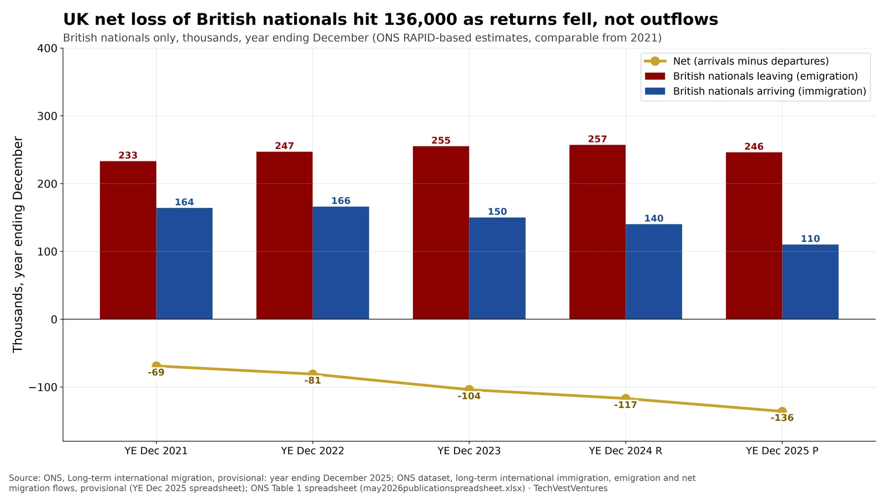

Q6. UK Exodus

ONS long-term international migration, provisional year ending December 2025 (released 21 May 2026). These figures count British nationals, using RAPID administrative data, who change usual residence for 12 months or more — not all emigrants, and not a count of taxpayers. In YE December 2025, 246,000 British nationals left the UK and 110,000 arrived, a net loss of -136,000. Emigration was 4% lower than the revised YE December 2024 figure (257,000). Immigration of British nationals fell from 140,000 to 110,000 and has dropped from 166,000 in YE December 2022. The net loss has widened steadily from -69,000 in YE December 2021 to -136,000.
- Total UK long-term emigration in YE December 2025 was 642,000; British nationals were 246,000 of that (38%).
- British emigration has been broadly stable since YE December 2022 (247,000 then, 246,000 now). The wider net outflow is fewer returnees.
- ONS cautions that British-national estimates from YE June 2021 onwards (RAPID) must not be compared with earlier International Passenger Survey figures, which under-covered this group.
- A claim circulating after the May 2026 release — that British nationals “were not leaving to the extent they are now with Labour in government” (https://x.com/Christi11935489/status/2057385971390333111) — does not match this series: outflows eased slightly while returns fell.
Note: YE December 2025 estimates are provisional (P); YE December 2024 figures were revised (R) in the May 2026 release. ONS rounds each cell to the nearest thousand, so rounded net migration may not equal rounded immigration minus rounded emigration. The statistical definition of a British national (NINo holders not in the Migrant Worker Scan, plus long-resident people on the Scan likely to have become citizens) may differ from the legal definition of nationality.
Sources: ONS, Long-term international migration, provisional: year ending December 2025 ONS dataset, long-term international immigration, emigration and net migration flows, provisional (YE Dec 2025 spreadsheet) ONS Table 1 spreadsheet (may2026publicationspreadsheet.xlsx)